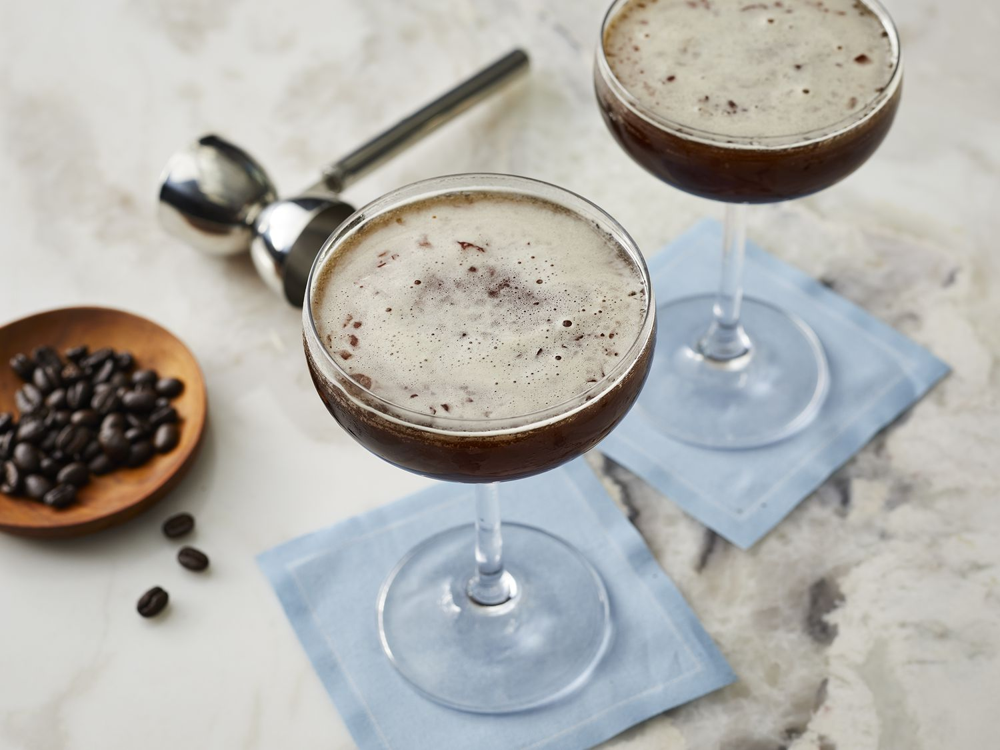

Description
A coffee cocktail using vodka, a modern classic
Ingredients
- Martini glass (or glasses)
- Vodka of choice, I like Ketel One, 30 mil
- Coffee liqueur, such as Kahlua, 30 mil
- Espresso, 30 mil
- Simple syrup, or Monin cane sugar syrup
- Cocktail shaker
- Ice
Method
- Half-fill shaker with ice
- Add all ingredients, 30m measures of all will make quite a sweet drink with strong foam, so dial back on the syrup if needed. Use less for Monin syrup, as it is more sugary. Quantities can be adjusted to taste or multiplied for more drinks.
- Close shaker and shake hard until water condenses and freezes on the outside
- Pour, serve
- Enjoy!